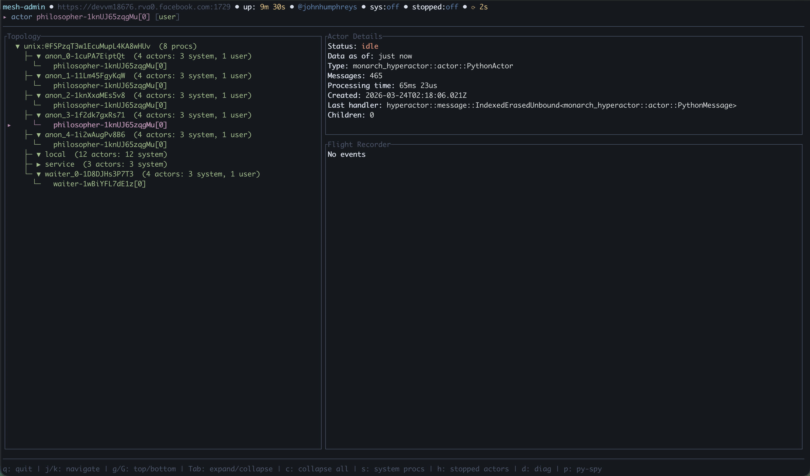
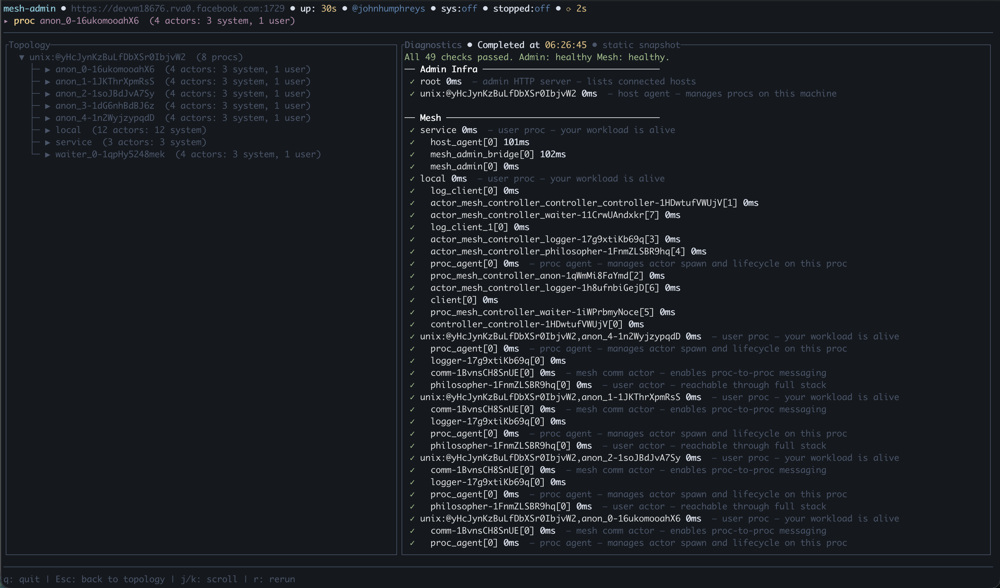
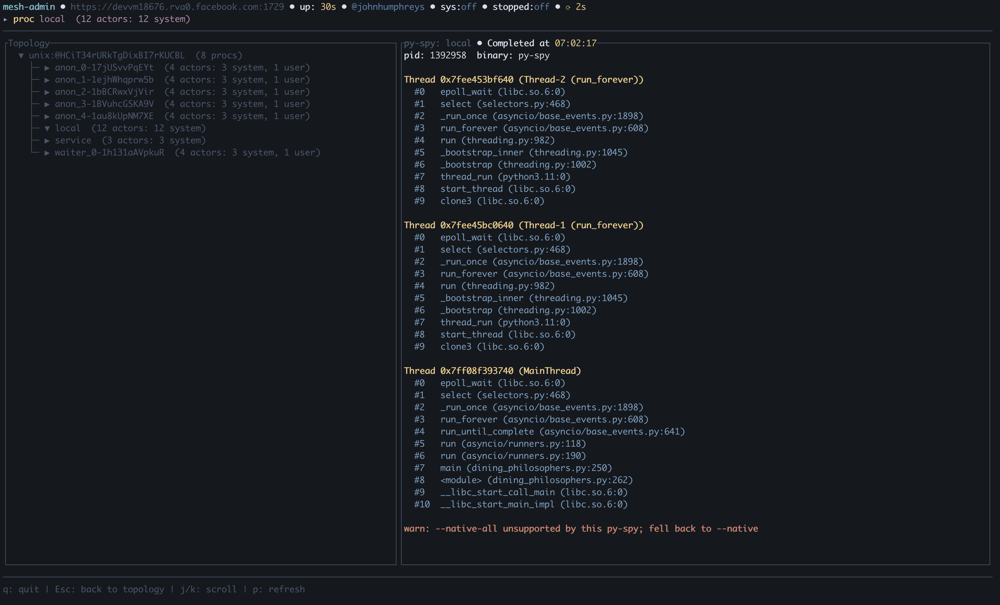

Mesh Admin TUI#
The Mesh Admin TUI (monarch-tui) is an interactive terminal client for
inspecting live Monarch meshes. It connects to the mesh admin HTTP API and
renders the full topology — hosts, processes, and actors — as a navigable tree
with a contextual detail pane.
The TUI is included in the torchmonarch PyPI package. After
pip install torchmonarch, the monarch-tui command is available on PATH.
Quick Start#
Start any Monarch application that spawns a MeshAdminAgent. The
Dining Philosophers example is the easiest way to try it — five philosopher
actors share chopsticks around a table, mediated by a waiter actor that prevents
deadlock.
Terminal 1 — start the example:
python python/examples/dining_philosophers.py
The example prints the admin server address on startup:
Mesh admin server listening on http://127.0.0.1:1729
Terminal 2 — attach the TUI:
monarch-tui --addr 127.0.0.1:1729
Topology Tree#
The main view is a split-pane layout: an expandable topology tree on the left showing hosts, processes, and actors, and a detail pane on the right with contextual information for the selected node.
Navigate with j/k, expand and collapse nodes with Tab. Selecting an
actor shows its status, message count, processing time, last handler, and
flight recorder events.

Diagnostics#
Press d to run a full health check across the mesh. The diagnostics overlay
probes every node in the topology and reports pass/slow/fail for each, separated
into Admin Infrastructure (admin server, host agents, service procs) and
Mesh (user procs and actors). Each probe shows its latency in milliseconds.

Py-spy Stack Traces#
Press p on any proc or actor to capture a live Python stack trace via
py-spy. The overlay shows per-thread
stacks with frame-level detail, GIL ownership, and thread names. Each press
fetches a fresh trace — useful for diagnosing hangs in C extensions and CUDA
calls.
py-spy is included as a default dependency of torchmonarch.

Keybindings#
Key |
Action |
|---|---|
|
Move cursor down |
|
Move cursor up |
|
Jump to top |
|
Jump to bottom |
|
Page down |
|
Page up |
|
Expand/collapse selected node |
|
Collapse all nodes |
|
Toggle system actor visibility |
|
Toggle stopped actor visibility (failed actors always remain visible) |
|
Run diagnostics overlay |
|
Py-spy stack trace for selected proc or actor |
|
Scroll selected item to top of viewport |
|
Dismiss overlay |
|
Quit |
CLI Options#
monarch-tui [OPTIONS] --addr <ADDR>
Flag |
Description |
Default |
|---|---|---|
|
Admin server address ( |
required |
|
Auto-refresh interval in milliseconds |
|
|
Color theme: |
|
|
Display language: |
|
|
Run diagnostics non-interactively, print JSON, and exit |
|
|
Path to PEM CA certificate for TLS |
auto-detected |
|
Path to PEM client certificate for mutual TLS |
auto-detected |
|
Path to PEM client key for mutual TLS |
— |
Non-interactive diagnostics#
For scripted health checks, use --diagnose to get a JSON report on stdout:
monarch-tui --addr 127.0.0.1:1729 --diagnose
# Exits 0 if healthy, 1 if any check failed.
Source Code#
Component |
Location |
|---|---|
TUI binary |
|
Admin HTTP API |
|
Dining philosophers example |
|

{kind=link}
{kind=link}
{kind=link}